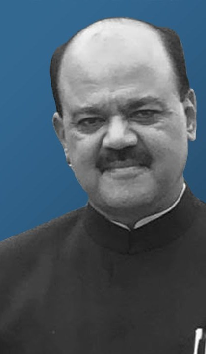

Dr. Sant Kumar Chaudhary
For more than two decades, Dr. Sant Kumar Chaudhary has worked to bring education, healthcare, and rural development to the regions of India that most need them — building, from a single trust founded in 2001, the Shankara Group of Institutions and a wider service network across five states.

A life in service of education and rural India
“The first fruit of education must be humanity and self-control.” — Dr. Sant Kumar Chaudhary, guiding philosophy of the Shankara institutions
What he has built
Shankara Group of Institutions
A network of professional colleges he founded at Kukas, Jaipur — engineering, management, teacher-training, and nursing — alongside schools and degree colleges in rural Bihar and beyond.
Kanchi Shankara Eye Hospital
Specialist eye-care he set up to reach communities where such treatment is otherwise out of reach.
Krishi Vigyan Kendra, Chanpura
An agricultural science centre — soil testing, seed multiplication, watershed work — bringing modern practice to farming families.
Bharat Gaurav Samman
Dr. Sant Kumar Chaudhary has been felicitated with the Bharat Gaurav Samman for his contribution to education and rural development in India.